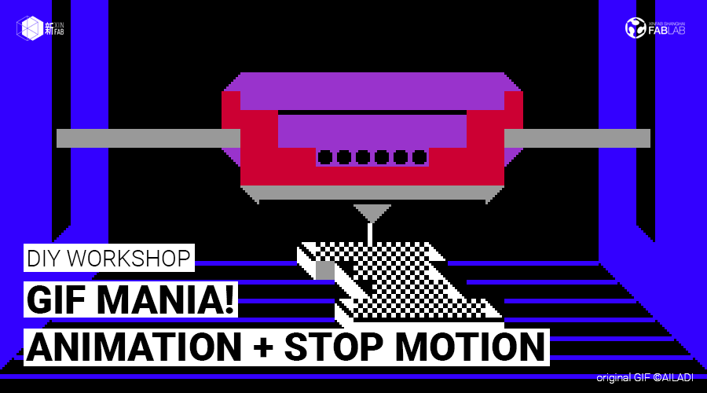
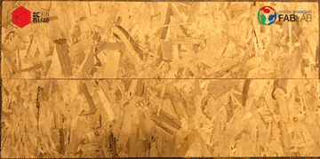
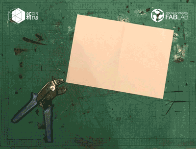
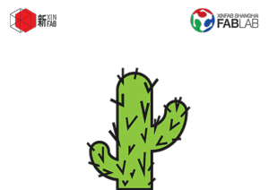
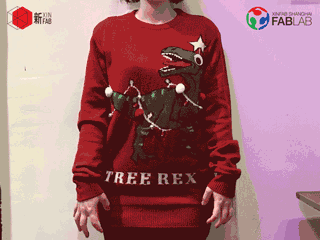

WORKSHOP
DIY WORKSHOP: GIF Mania! Animation + Stop Motion | GIF疯狂！动画+定格动画

When:Saturday, January 6, from 1:30pm to 5:30pm
Where: Xinfab - Kangding East Rd, Lane 45, Building no.5, Room 102, Jing'an District
Price: Price: 350 RMB (Wechat 360 RMB)
Jiaozis with no stuffing. Taobao with no kuaidi. Empty, sad, meaningless. That’s what your WeChat messages are without GIFs (stickers).
And as everybody fights to be the coolest kid in WeChat groups with the coolest stickers, make sure you always win: show off with your very own GIFs.
Join Katie and Pamela in a workshop where you will learn how to create and design your own GIF. Beyond making gifs, what you will actually learn are animation techniques that you can later take a step further and make videos too. We will teach you how to make simple animations (gifs) as an introduction to two different techniques: animated vectors (artwork or words) and stop motion (photos). You will follow a series of gifs as references on style and construction.
Plus, if time allows, we’re going to explain how you can submit stickers to the WeChat sticker collection.
If you have a company or a product, this a creative and unique way to promote your brand or creations on WeChat but also on any other social media channel!
**Requirements: No previous knowledge is needed, but you do need to be familiar with how to use a computer.
Things you should bring:
// Your laptop, charger and mouse
// Install Adobe Illustrator before you come (Trial version is OK: http://www.adobe.com/products/illustrator/free-trial-download.html)
// Install Photoshop in your laptop before you come (Trial version download here:http://www.adobe.com/products/photoshop/free-trial-download.html)
// Your passion, curiosity, and questions





WORKSHOP SCHEDULE
// STEP 1: Vector Making with Illustrator
_Overview of the software
_Basic tools and commands
_Make some vectors of your own
// STEP 2: Make it all move with Photoshop
_Photoshooting: Take some photos for your animation
_Overview of the software
_Basic tools and commands for animation
_Make it all move!!
///////////////////////////////////
HOW TO SIGN UP
SIGN UP DEADLINE: JANUARY 5
// ALIPAY (350 RMB)
Transfer the workshop fee to pay@xinfab.com (please indicate your phone number on the payment details so we can contact you!)
// CASH (350 RMB)
Come by our lab during our opening hours to book your spot.
// WECHAT (360 RMB - Wechat charges a fee)
Enter our shop from your phone via this link and proceed to payment with Wechat Wallet
Questions? Send us an email to info@xinfab.com.
///////////////////////////////////
ABOUT THE TEACHERS
Katie Chen is a Chinese Interactive Media Arts major with a focus on combining coding and design at New York University Shanghai. Katie has been coding intensively for about a year and half now and she can write in HTML, CSS and processing (p5 js) as well - a graphic programming language that's gotten popular over the past couple of years. Among the many things she has done, she has developed a drumming game (graphics in processing, Arduino and sensors for the physical reactions). Katie can create really cool animations just by typing commands. Aside from being a part of her formal education, coding and animating are a couple of Katie's favorite hobbies.

Pamela Martello is a Mexican jewelry designer who has been creating original and stylish 3D and 2D designs for the past 9 years. Jewelry is Pamela's true love, but she has a decade-long love affair with graphic design and Illustrator, with which she complements her jewelry creations.
Pamela is a graduate from the European Institute of Design (IED) in Rome, Italy. She entered the IED through the big door, by winning a design competition and being awarded a scholarship. Upon graduating in jewelry design, Pamela took a graphic design specialization, also at the IED. In her career, Pamela has won multiple jewelry and graphic design awards, including an artwork design award for American Express. Pamela has been creating jewelry in Shanghai for the past 4 years.
Last year, Pamela discovered Xinfab and immediately joined our core team as a volunteer. She loves the laser and the 3D printers and is always experimenting in other fields related to design, where she finds inspiration for her creations. She has also taught many workshops with us. For Pamela, travelling, exploring, and living in different places offers a constant stream of stimulus for new ideas (plus a little fantasy too).
时间：1月6日星期六从下午1：30到5：30
地点： 新Fab- 静安区康定东路45弄5号102室
价格： 350元（微信360元）
饺子无馅。淘宝无快递。空的，伤心的，无意义的。这就是你的微信消息无GIF（贴纸）。
而且每个人都争先恐后地成为微信群中最酷的小孩，确保你总是赢：炫耀你自己做的GIF。
加入Katie和Pamela在车间，你将学习如何创建和设计自己的GIF。除了制作gif之外，你将会学到什么是动画技术，你可以稍后再进一步制作视频。我们将教你如何制作简单的动画（GIF）作为两种不同技术的介绍：动画矢量（艺术作品或文字）和定格动画（照片）。你会按照一系列的GIF作为风格和建设的参考。
此外，如果时间允许，我们将解释如何提交贴纸到微信贴纸收集。
如果你有公司或产品，这是一个创意和独特的方式来推广你的品牌或在微信上的创作，但也在任何其他社交媒体渠道！
要求：以前不需要知识，但是您需要熟悉如何使用计算机。
你应该带的东西：
// 笔记本和充电器
// 鼠标（推荐）
// 你来之前在你的笔记本电脑上安装Adobe Illustrator！ （这里免费下载：http://www.adobe.com/products/illustrator/free-trial-download.html)
// 你来之前在你的笔记本电脑上安装Photoshop！ （这里免费下载：http://www.adobe.com/products/photoshop/free-trial-download.html）
// 你的激情，好奇心和问题
///////////////////////////////////
如何注册
注册截止日期：1月5日（星期五）
// 支付宝（350 RMB）
将研讨会费用转至 pay@xinfab.com（请在付款明细上注明您的电话号码，以便我们与您联系！）
// 现金（350 RMB)
由我们的实验室在我们的开放时间来预订你的位置。
// 微信（360 RMB - 微信收费）
有问题吗？ 发邮件到info@xinfab.com.
///////////////////////////////////
关于教师们
Katie Chen是中国互动媒体艺术专业，专注于纽约大学上海编码与设计相结合。 凯蒂一直致力于大约一年半的编码工作，她还可以编写HTML，CSS和处理（p5 js） - 一种在过去几年中流行的图形编程语言。 在她所做的很多事情中，她开发了一个打鼓游戏（加工图形，Arduino和物理反应传感器）。 凯蒂可以通过输入命令创建非常酷的动画。 除了成为正规教育的一部分之外，编码和动画是凯蒂最喜欢的爱好。
Pamela Martello是墨西哥珠宝设计师，在过去的9年里一直在创造原创和时尚的3D和2D设计。珠宝是帕梅拉真正的爱情，但她与平面设计有十年的恋情，她补充了她的珠宝作品。
Pamela毕业于意大利罗马的欧洲设计研究院（IED）。她通过大门进入IED，赢得设计比赛并获得奖学金。在珠宝设计毕业后，Pamela在IED上也进行了平面设计专业。在她的职业生涯中，帕梅拉赢得了多个珠宝和平面设计奖，包括美国运通艺术品设计奖。帕梅拉在过去的四年里一直在上海创造珠宝。
去年，帕梅拉发新fab，立即加入我们的核心团队当志愿者。她喜欢激光和3D打印机，并且一直在与设计有关的其他领域进行试验，从中找到灵感。她还和我们一起教了许多讲习班。对于帕梅拉来说，旅行，探索和生活在不同的地方为新的想法提供了不断的刺激（加上一点点幻想）。